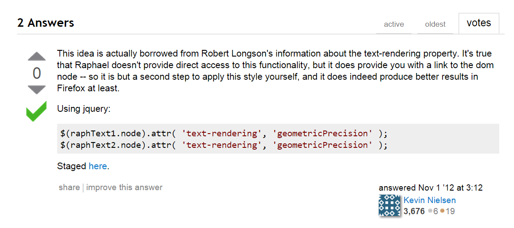
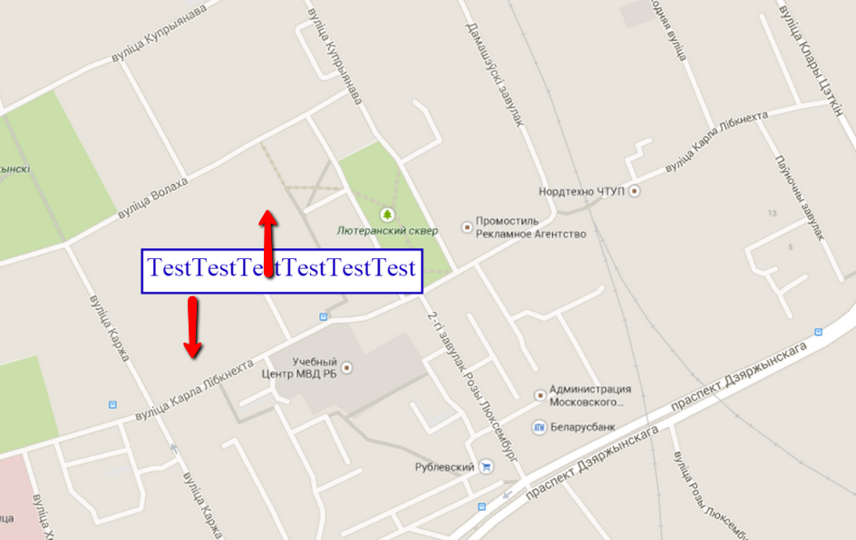

Проблема
See the Pen svg basic example by ilya (@ilyabasiuk) on CodePen.
stackoverflow в помощь

.group {
text-rendering: geometricPrecision;
}See the Pen geometricPrecision by ilya (@ilyabasiuk) on CodePen.
А как же делают остальные???
Быстрее и больше
See the Pen svg basic example bigger and faster by ilya (@ilyabasiuk) on CodePen.
Двигаются, как 2 независимых объекта
Use a spacebar or arrow keys to navigate